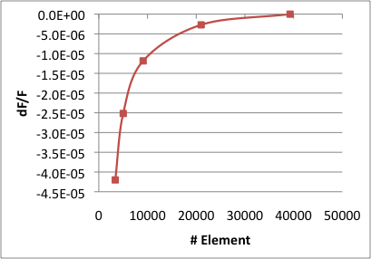
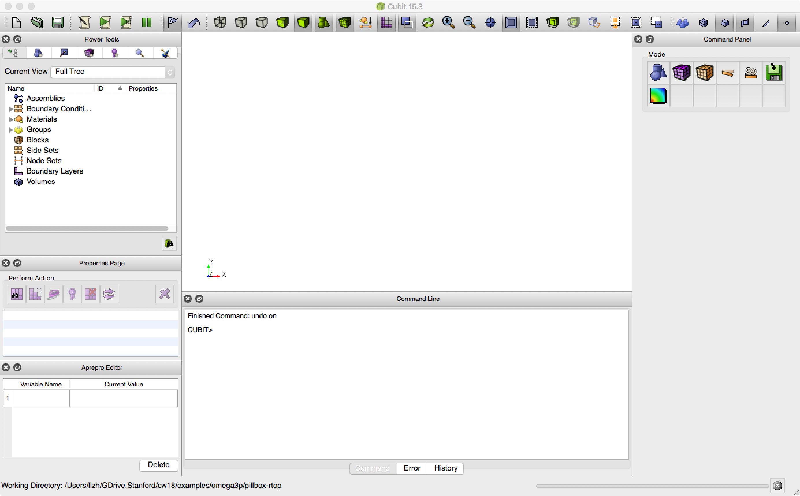
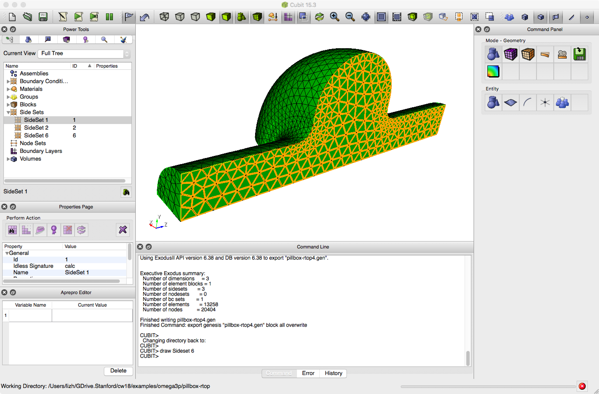
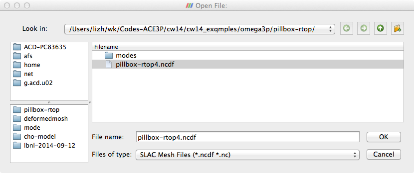
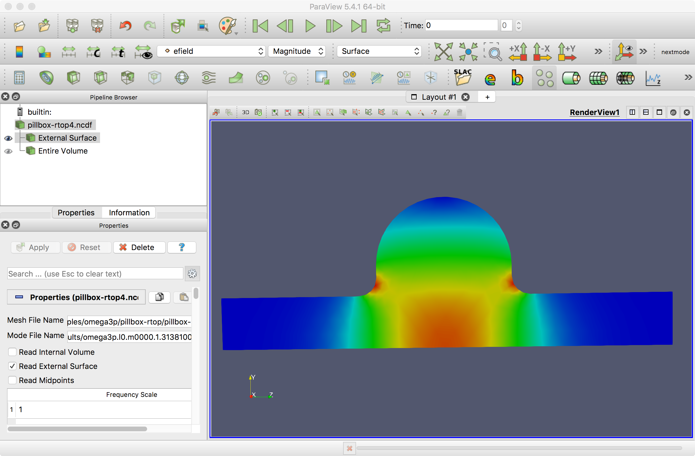
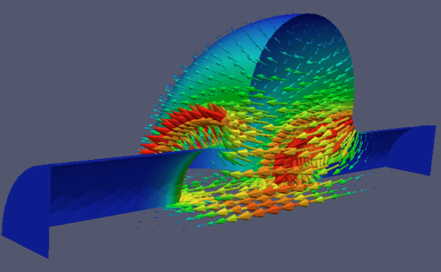
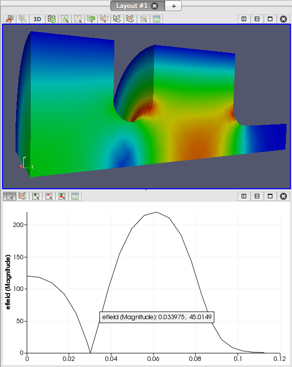

Tutorial 1: pillbox cavity¶
This tutorial runs the complete ACE3P workflow on the simplest useful cavity: a pillbox with rounded top and beam pipes. You will build and mesh the geometry in Cubit, convert the mesh, compute the two lowest monopole modes with Omega3P, look at the fields in ParaView, extract R/Q and peak surface fields with acdtool, and finish with a mesh convergence study.
Example directory: examples/omega3p/pillbox-rtop

| Parameter | Value |
|---|---|
| Cavity length | 90 mm |
| Cavity radius | 100 mm |
| Beam pipe radius | 35 mm |
| Beam pipe length | 300 mm total |
| Iris rounding | 12 mm |
| Top rounding | 45 mm |
Expected result: the TM010 mode at 1.3138 GHz with Q0 of 28,885 for copper walls.
Step 1: Build the geometry¶
The journal step1-Make-pillbox-rtop.jou builds the full cavity, then cuts it to a quarter model using the two symmetry planes.
reset
#{cav_length = 90}
#{cav_radius = 100}
#{bp_length = 300}
#{bp_radius = 35 }
#{iris_rounding = 12}
create Cylinder height {cav_length} radius {cav_radius}
create Cylinder height {bp_length} radius {bp_radius}
unite volume all
compress ids
modify curve 6 5 blend radius {iris_rounding}
modify curve 1 2 blend radius {0.5*cav_length}
export acis "pillbox-rtop0.sat" overwrite
webcut volume 1 with plane xplane offset 0 noimprint nomerge
delete volume 2
compress ids
webcut volume 1 with plane yplane offset 0 noimprint nomerge
delete volume 1
compress ids
export acis "pillbox-rtop4.sat" overwrite
Lines starting with #{...} define Cubit variables, so dimensions can be changed in one place. The full model is saved as pillbox-rtop0.sat before cutting, so it can be reused when adding couplers in Tutorial 2. The quarter model is pillbox-rtop4.sat.
Run it in Cubit with the Play button, or through Tools, then Journal Editor.

Step 2: Mesh¶
reset
import acis "pillbox-rtop4.sat"
volume all scheme Tetmesh
volume all sizing function type skeleton scale 5 time_accuracy_level 2 min_size auto max_size 12 max_gradient 1.2
mesh volume all
Sideset 1 surface 7
Sideset 2 surface 1
Sideset 6 surface all except 7 1
block 1 volume all
block 1 element type tetra10
volume all scale 0.001
export Genesis "pillbox-rtop4.gen" block all overwrite
Sidesets 1 and 2 are the two symmetry planes. Sideset 6 is every other surface, which is the cavity wall. The element type must be tetra10 and the model is scaled from millimeters to meters just before export.

The meshed quarter model. The Cubit command window reports 13,258 elements and three sidesets.
Step 3: Convert the mesh¶
Copy pillbox-rtop4.gen to your working directory on the HPC system and convert it:
Check the statistics it prints. You want Euler Char is OK, boundary IDs 1 2 6, one material ID, and zero invalid second-order elements. The meaning of each line is explained in Mesh preparation.
Step 4: Write the Omega3P input¶
ModelInfo : {
File: ./pillbox-rtop4.ncdf
BoundaryCondition : {
Magnetic: 1, 2 // symmetry planes: monopole modes
Exterior: 6 // cavity wall
}
SurfaceMaterial : {
ReferenceNumber: 6
Sigma: 5.8e7 // copper, S/m, for Q0
}
}
FiniteElement: {
Order: 2
CurvedSurfaces: on
}
EigenSolver : {
NumEigenvalues: 2
FrequencyShift: 1.0e9 // look for modes above 1 GHz
}
PostProcess : {
Toggle: on // write field files for ParaView
ModeFile: mode
}
Two magnetic symmetry planes select modes whose electric field is normal to both planes, which for a cylindrical cavity means the monopole family. To get dipole modes, change one plane to Electric.
The default volume material is vacuum, so no Material block is needed. If you want to be explicit:
Step 5: Run Omega3P¶
Submit a batch job with the header for your system from Getting started. The solver line is:
For this mesh, 16 ranks finish in about one minute. Watch progress with squeue -u $USER and tail -f on the Slurm output file.
Step 6: Read the results¶
Look in omega3p_results/:
omega3p.l0.m0000.1.3138129e+09.mod
omega3p.l0.m0001.2.3291363e+09.mod
omega3p.log
omega3p.out
omega3p.warn
VECTOR/
The mode frequencies are already in the file names. In omega3p.out, the mode summary gives the details:
Mode : {
TotalEnergy : 4.4270939088102e-12
QualityFactor : 28885.092644708
File : omega3p_results/omega3p.l0.m0000.1.3138100e+09.mod
PowerLoss : 1.2651947886823e-06
Frequency : 1313809979.5477
}
Mode : {
TotalEnergy : 4.4270939088102e-12
QualityFactor : 33830.795068362
File : omega3p_results/omega3p.l0.m0001.2.3291386e+09.mod
PowerLoss : 1.9150571359106e-06
Frequency : 2329138623.836
}
Mode 0 at 1.3138 GHz is TM010 with Q0 of 28,885 for copper walls. Mode 1 at 2.329 GHz is the next monopole mode. Above the summary, the log records the DOF count, which you will need for the convergence study:
Step 7: Visualize in ParaView¶
Copy the mesh and the mode files back to your laptop:
In ParaView with the SLAC toolbar enabled, click the SLAC folder icon, select the mesh file and a mode file, and Apply.

Color the external surface by efield magnitude to see the field pattern. For TM010 the field peaks on axis in the cavity and at the iris.

For an arrow plot, apply Filters, Alphabetical, Glyph with efield as the vector. To look through the symmetry plane, select External Surface, apply Extract Block, and keep only the dataset for the wall.

The Line plot button on the SLAC toolbar plots a field component along a line, typically the beam axis.
Step 8: Post-process with acdtool¶
Shunt impedance, kick factor, and peak surface fields come from acdtool postprocess rf, driven by an .rfpost file. The example directory contains pillbox-rtop.rfpost with RoverQ and maxFieldsOnSurface enabled. Run:
Output for the two modes:
[RoverQ]
ModeID Frequency (V_r, V_i) |V| RoQ(ohm/cavity)
0 1.31381e+09 ( 2.2980e+00, 3.4925e+00) 4.18073e+00 1.19567e+02
1 2.32914e+09 (-7.2671e-04, 6.2729e-04) 9.59998e-04 3.55621e-06
[maxFieldsOnSurface]
surfaceID : 6
ModeID : 0
Emax : 4.22488e+07 (V/m) at ( 3.9627e-02, 1.8486e-02, -4.5454e-02)
Hmax : 5.80786e+04 (A/m) at ( 3.3116e-02, 7.9193e-02, 3.2771e-02)
R/Q of about 120 ohm per cavity for TM010, and essentially zero for mode 1, which has no net on-axis voltage. Peak fields are scaled to the gradient given in the RFField block. The .rfpost file format and all available functions are described in Post-processing.
Convergence study¶
A single mesh tells you nothing about accuracy. The directory includes mesh0.jou through mesh3.jou, identical except for the sizing function scale, which is 10, 8, 6, and 4 respectively, so mesh0 is the coarsest and mesh3 the finest. The input file mesh-conv.omega3p reads mesh0.ncdf; edit the file name for each level.
Run all four meshes and record the TM010 frequency and element count from each omega3p.out. Treat the finest mesh as the reference and plot the relative frequency error against element count.

With order 2 elements, the frequency converges to a few parts in 105 by about 20,000 elements. Use this kind of plot to decide how fine a mesh you need for a given accuracy target, and remember that surface fields converge more slowly than frequency.
Order versus mesh density
Raising FiniteElement.Order from 2 to 3 on the same mesh often gains more accuracy per DOF than refining the mesh. The workflow assistant page shows an automated order-convergence sweep on this cavity.
Exercise¶
examples/omega3p/omega3p-exercise-1 contains a 1.5-cell gun geometry with target dimensions. Build it, find the pi mode, and adjust the cell dimensions so the mode frequency is correct and the field is balanced between cells.
